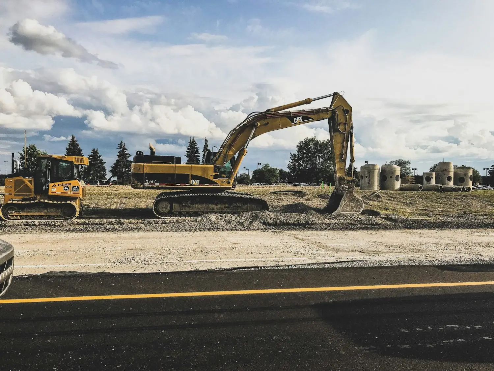

A Complete Report From Wherever the Work Is
Book a ConsultationBuilt for People Who Work on Their Feet
Inspectors and crews work with gloves on, in trenches, on ramps and in mechanical rooms. Stopping to fill out a form means losing time and detail, and records are often completed hours later from memory.
With CityWeave, they point the camera, state what they observe and return to work. The agent asks for any required detail and produces a structured record with location, time and photos, ready for the supervisor or the system of record.
Water Systems
Leaks, valves and pipe condition.
Construction
Site inspections and safety observations.
Airports
Airfield, terminal and equipment defects.
Hospitals
Facility issues reported from clinical floors.
Utilities
Asset condition from the field.
Transit
Station and track-side conditions.

A Water Pipe Leak at a Construction Site
The Inspector Says
“There's a leak at this joint on the water line. It's slowly filling the trench.”
The Agent Asks
What is the pipe material and diameter? Has the valve been shut? Is the trench safe to enter?
It Creates
An inspection record with location, photos, severity and the team to notify, confirmed before it's filed.
Ready to Get Started?
Book a consultation and we will give you a live demo, walk you through the product and discuss the workflow you would like to improve.